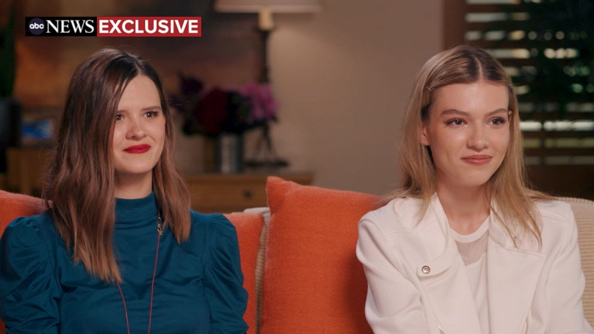
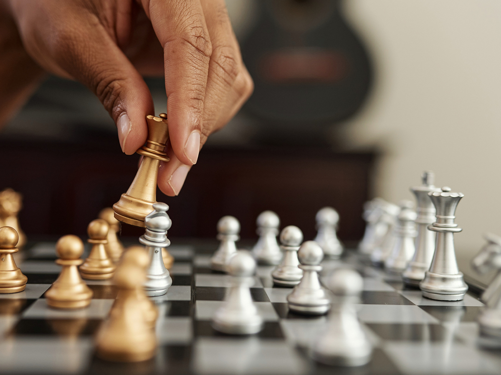

Jordan Turpin and Selfish vs. Selfless Motivational Strategies
I learned something about life today. I had heard about the story before of a 19 year old girl escaping an abusive family but I never heard the full story until today on youtube.
Jordan's a unique girl. She's simultaneously mature and innocent. She's the girl on the right and you can click on the picture to go to the video interview.
She knows what is important in life and provides a great perspective, but she's also got the charm of a little girl. Her vocabulary is simultaneously intelligent and limited.
She was socially isolated and tortured but I find it so inspiring that she was able to rescue her siblings it really warms my heart to see her so happy now.
The relationship with her and her sister Jennifer is awesome. I'm really proud of these girls and girls like Yim Ne Park from North Korea having nice adult lives. They are getting to share their light with the world and I love that they weren't bottled up forever.
Life hasn't exactly been going my way as much as it could and I think it's because I've been coming at it fro the wrong direction with the wrong attitude. My mindset recently has been about what I can get from the world, instead of what I can give to it.
Getting what's mine is useful to a point when you're no longer relying on others, but I lack the motivation to be a selfishly driven individual.
I don't realllly want to put in the effort required to "get" the girl or even a computer programming job. When my focus is on myself, and my legacy, I stagnate. However, seeing a little girl like Jordan really fires me up and makes me wish I could help make this world a safer place for kids growing up.
There's something so fundamentally wrong about depriving any form of consciousness from basic caregiving when they are helpless. If I could just build my life around making another form of consciousness happy instead of my own, I think it could bring me joy indirectly, and that's not even why I'd be doing it... but when you chase happiness as a selfish pursuit it devolves into the seeking of temporary pleasures and drugs and fast food, for me at least.
It is only when focusing on others, that one can experience true sustainable satisfaction. I feel like if I could just make a cat happy and give him an awesome place to live that would be a huge achievement in the universe because we've all seen how miserable cats can get when living in bad conditions. Animal and Child abuse are tough to tackle but I can at least try to raise a loving family of my own and focus on spreading love and treating other forms of consciousness rightly.
I want to give to the world. I no longer wish to just win the lottery with no effort. I want to make a real difference in another's life, whether that be a cat or a bearded dragon.
Getting home from work and trying to amuse myself with lonely activities is not the way to go. I have to start doing things for other people.
Imagine how awesome it would feel to be able to come through for a stranger that's only ever been abused. I remember one time I lived with a girl who had never been on a date so I took her to the movies on a nice date as a friend and that was really cool to do but my girlfriend at the time was not thrilled with my choice of altruism.
I don't regret it. Look, I've experimented with my little self-improvement hiatus but the vacation is over. I'm back. I shaved my atrocious beard and I went to the gym and I'm going to bed early. I did my laundry and I'm going to try to be as useful and beneficial to this world as possible. I'm going to make my creator proud of creating me. I'm going to be there for someone else when they need it, and I know they may return the favor someday but that's not the point. The point is to understand how bad suffering can get, and to do what you can to alleviate the suffering of others.
I'm very excited to have discovered this little mindset shift and I will be more positive and altruistic moving forward. I want to get my life in order so that I can be in a position to help others. The previous motivation of getting my life in order just so I can say I'm better than you was not motivating enough.
But if I can improve myself, on the premise of helping others, and being useful to them, then I think I can actually be satisfied with my life when I'm dead.
I think I might actually be able to have more dicipline if I tap into this higher purpose that I feel. I really get emotional with these stories of these helpless girls I wish I could help.
I'd just like to thank Jordan and Jennifer for inspiring me and changing my perspective on life. We should all be on the lookout for abused people and be a friend to everyone we meet because we're all just kids who got older. We all still need to feel safe and loved. God bless.
You can get results with selfish motivations but those results will always be corrosive because they were obtained without consideration of the other people's feelings. Relationships built on loving the other person are much better because you naturally want to give that person the best version of yourself instead of just trying to take what they have while you have it.
Kobe wasn't interested in getting the attention of others. He was interested in providing the NBA with it's greatest competitor ever. He was a giver, not a taker. He gave, so much of himself, all of himself, to his craft, for us... the fans. For basketball itself. Kobe was a giver. I aim to be a giver. A provider. I want to help. I know how shitty life can be. And the Illuminati taking over the world doesn't even matter when they do it in secret and you can still go to the park with a friend and have a good time (for now, kind of). They have closed parks down recently but you can still kind of have a great time, coming from the perspective of the abused kids. They think the park is heaven and home is hell. I had a loving home and it was STILL trying at times. Imagine what that poor girl went through. I just hope she runs into good people and has a nice life from here on out. Thanks for reading. Love, Max! I love you all.
11/29/21
Life is a beautiful journey | Illuminati Master Plan
Life is a beautiful journey
I was researching robotics news today and it made me realize how incredible human consciousness is.
The problems I wrestle with every day are highly individualized.
I'm kind of on a self-improvement hiatus. It's kind of like I'm constantly downtalking myself for being short of my own expectations.
I often project 20 years into the future and see what can go wrong but life is really long and I'm only 30 years old. I will probably have many monumental moments in my future and it's a lot of pressure to become the man I wish to be in those situations.
Something happens to me and I often think about how it could have gone better if I were better.
It's an interesting choice I have of whether or not to self-improve or chase the girl.
And what would make me truly happy? Putting up chess teacher fliers and getting a new student? Going on a date with a pretty girl? Playing in a chess tournament? Learning something new in code?
I don't know but I'm also kind of down to sit back for a little bit and celebrate what I've achieved already. I'm very happy to be able to play the guitar and chess and call of duty. I'm happy with a lot of what my life is. I just wonder what it could be, but sometimes the beating myself up for not doing it is counter-productive. Maybe by letting back for a bit I can reevaluate my perspective.
This blog in my opinion has gotten too self-centered. I think it's natural for me to bring my own experiences into it but I think initally I was setting out for it to be more enjoyable or educational for others. Now it's kind of become self-therapeutic. However, I would like to talk about vaccine passports as restaraunts near me.
Illuminati Master Plan
I heard that restaurants in LA county require your proof of vaccination at the door to eat inside. Even the vaccinated have to be annoyed with this. The unvaccinated are not only annoyed but also cannot eat there! Ridiculous.
This is the one place I can talk uncensored because I basically own it, but I'm finding myself censoring what I'm about to say, but I won't. I think the covid pandemic does not exist as presented to the population. We'll use the term Illuminati to simplify a scenario where one group leads all groups interwovenly. I think the Illuminati made the covid-19 virus in a lab and then they released it in Wuhan China in a world wide false flag. The Chinese government took swift authoritative action and eradicated it but it was allowed to get everywhere else including America.
Then, in America, the CDC and some scientists came out with astronomical death projections from this new virus on the loose.
Americans were told this was so serious the best thing to do would be to stay at home and not ask questions for 2 weeks and shut down all businesses.
When we agreed, they said, "Can we please have one more week?"
We agreed again. Then it's been about 3 years since and only gotten more authoritarian, although it does ebb and flow.
Okay, so now that the Illuminati has shut down the entire world at the drop of a bat, they then issue a worldwide dress code to our faces. These stupid, surgical masks for regular people.
And then they police them like mad! Like you cannot get your hair cut mad. These restricitons were so draconian looking back on them that I still can't really believe it. This was all done in the name of a problem they themselves created in a lab on purpose.
Then, for the next step in their master plan, the Illuminati rushed in the new Covid Vaccine. The Illuminati has members in the presidency, the CDC, Big pharma, and everything in between. So, they rush and approve this emergency usage of a new type of mRNA vaccine and not only that, but they mandate everyone do it. They're hellbent at vaccinating all of us, children too. So they basically want a completely controlled docile population incapable of communicating, leaving their homes, seeing faces, plotting and overthrowing the government, or even just socializing and having fun. They want slaves. They want slaves and they want to own the blood in their veins and the neurons in their brain and they also want to control their mRNA and DNA.
The evidence of an overaching authority on this planet is overwhelming. The Illuminati control all major elements working in concert to carry out this insansely fast vaccine mandate for kids to go to school.
What's their endgame? Some say depopulation, or sterilization. I don't lean that way personally. I tend to think I don't know what they're going to do next. I'm having trouble guessing. I've also heard the vaccine leaves the arm and can travel through the whole body so it could go to the brain and alter some things the government wants different in 80% of people.
The problem with thinking that this is a concerted effort because of the deadly nature of this virus is that you're not acknowledging who created the virus and why.
The response to the virus, not the virus itself, but the response to the virus by world governments has been nothing short of earth-shaking. Many of history's greatest moments involved deception. The public is the last to know.
I'll leave you with a song from Will Smith's daughter. Also, if you believe me about the Illuminati Master Plann and don't know what to do, I'd give Jesus a second glance.
11/16
PHD Dire Warning
I don't know if what he's saying is true but I certainly don't want to take it and I don't to give away the password to my rna. Like I guard that with my life. I'm not signing up for a spike protein made in a lab from this crooks. It's so wild that this is going on. They are injecting children. People are getting booster shots although probably some are coming to their senses.
It's crazy to me how radical it is to just take your chances without a vaccine or a mask. It's called breathing the air and being human. I think the vaccine, if poison, is slow acting. That way, they can have most the people survive it while they get everyone to take it. Like a pirate giving poison wine to his crew to steal all the treasure for himself.
11/14/21
Self-Love
I love myself, I accept myself, I forgive myself. I'm proud of myself.
I work hard, kick ass, and take names.
I entertain my fantasy league. I sell insurance. I spit conspiracy theories and I write songs and play chess.
Today I went to the gym at night in my sweatshirt and slides because it's comfy. Then I went swimming and took a jacuzzi. It was nice.
I am going to be nicer to myself. Although I think I could do better, it's important for me to accept myself during the process of improvement. I really want a scale to weight myself and see if I'm losing weight, and I also want a blender to make smoothies. Peace out !
11/2/21
Cabin in the Woods
I went to a Halloween Party in a cabin in the woods over the weekend

It was very fun and a nice way to get away from my own thoughts.
I'm lucky to have such a great group of friends that we can do fun things with as adults with money.
Renting a cabin and splitting the rent for a weekend is an awesome time. Next time, I would like to bring a girlfriend with me.
If I can have a dating profile with fun pictures like this, instead of lonely selfies, and if I can hit the gym a bit more, instead of hitting the candy section of 711, I should be able to get some more dates, and actually find a girl I can take to cool events like this.
Life is long. I'm proud of myself for working through everything I've been through mentally. Ya, I got scarred, Ya I gave up and ya I went crazy. But I'm still here. I'm still me. I'm not done with life. I just have to shake off the "story" I've been telling myself about myself and start a new one.
Each month of this blog is a fresh start for my thoughts, personality, and focus. This month I want to focus on clarity. Just seeing through bullshit and taking sensible steps toward my desired life. I'm going to have my actions, and mind join together on a common purpose. I'm going to work hard, and move closer to who I want to be.
I want to be a better, more reasonable man. I'd like to be humbler, but also more confident. I'd like to stop doubting myself. I have no disability, but sometimes I act as if I do with my body. It's hard to explain but I feel like I doubt myself and feel like I'll make a fool of myself with my body. I'm not comfortable with my body. It's not how I learned to be. I used to like having my shirt off around people, but now I'm embarrassed.
Still, I got some Yoga in over the weekend with my friend's girlfriend and I will try to focus on that this month. I will focus on my body and stretching it and working it out properly. Happy body, happy mind.
That's my new slogan I will try out this month. Happy Body, Happy Mind.